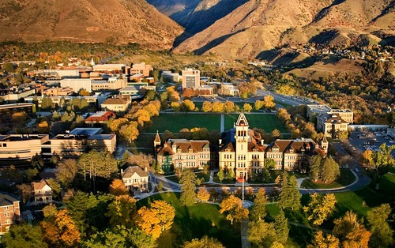

This website was created to highlight the beauty and lifestyle of Logan, Utah. It provides information about the town, its connection to Utah State University, and the surrounding outdoor attractions.

Visit Utah State University to learn more about academics and campus life.
© 2026 Exploring Logan, Utah
Email Us